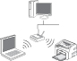
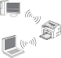
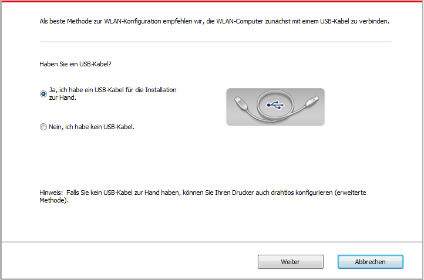
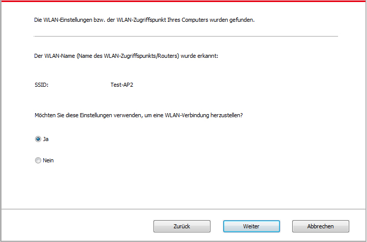
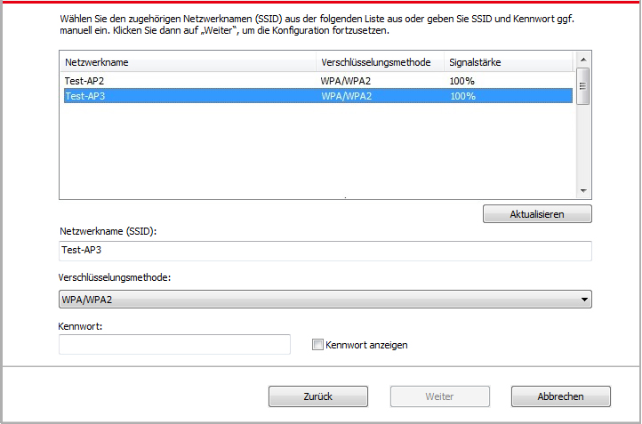
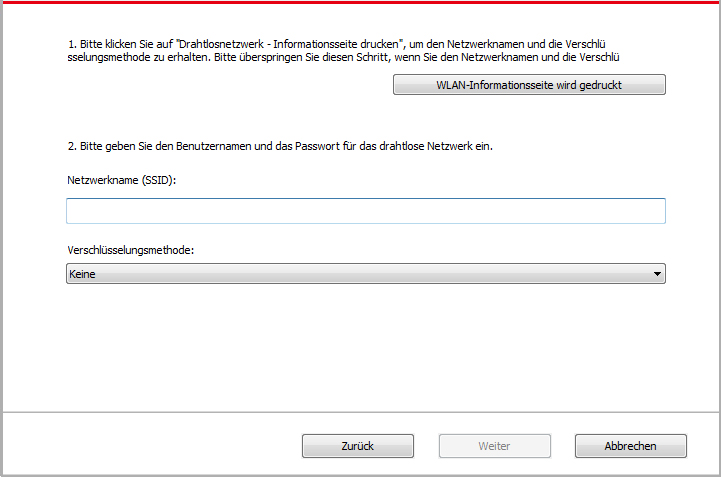
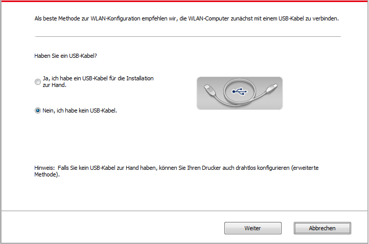
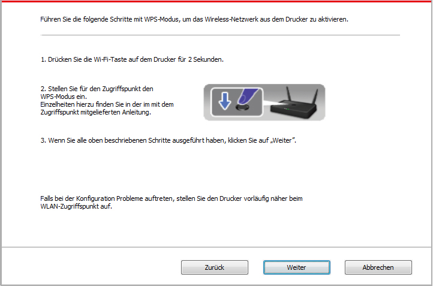
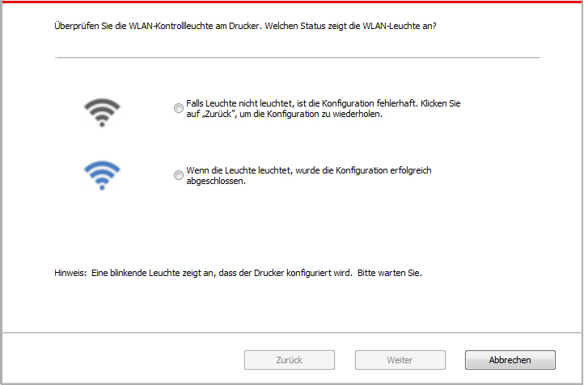

5.Einstellungen für drahtloses Netzwerk (gilt für Modelle mit Wi-Fi Funktion )
Je nach Modell-Typen, der print-Modell mit Wi-Fi Drucken Funktion unterstützt zwei drahtlosen Netzzugang Verbindung nämlich Grundstruktur und Soft-AP. Im Allgemeinen wird nur eine Verbindung zwischen Computer und gleichzeitiges drucken. Haben Sie Probleme bei der drahtlosen Netzzugang Einstellungen, siehe Kapitel 5.3 für häufige Probleme bei der drahtlosen Netzzugang Einstellungen.
|  | Infrastrukturmodus: durch Router mit dem drahtlosen Gerät verbinden. 1. Eingabepunkt (WLAN Rrouter). 2. Drucker mit drahtlose Netzwerk 3. Durch drahtloses Netzwerk mit dem Eingabepunkt verbindener Computer 4. Durch Netzwerkkabel mit dem Eingabepunkt verbindener Computer |
|
 |
Soft-AP Der drahtlose Computer ist direkt mit dem drahtlosen Gerät verbunden. |
5.1.Infrastrukturmodus
Sie können durch den Eingabepunkt (WLAN Ruter) als Medium den Computer und Drucker zusammenverbinden. Die Eingabepunktverbindung (WLAN Router) wird in drahtloses Netzwerkkonfigurationswerkzeug und Wi-Fi Protected Setup (WPS) Konfiguration zwei Möglichkeiten aufteilen.
Wichtig:Vor der Installation des drahtlosen Netzwerk müssen Sie den Netzwerkname (SSID) und Password von der Eingabepunkt (WLAN Router) wissen, weil Sie während der Einstellung des Netzwerks brauchen. Falls Sie sie nicht wissen, können Sie an Ihrem Netzwerkadministrator oder Eingabepunkthersteller (WLAN Router) wenden.
5.1.1.Drahtloses Netzwerkkonfigurationswerkzeug
Wenn Ihr Computer den Treiber schon installiert und schon mal mit einem drahtlosen Netzwerk verbunden hat und das drahtlose Netzwerk sich geändert hat, können Sie durch drahtloses Netzwerkkonfigurationswerkzeug das Netzwerk wieder einstellen.
5.1.1.1.Vorbereitung
1. Eingabepunkt (WLAN Rrouter).
2. Der schon mit Netzwerk verbindene Computer.
3. Drucker mit drahtlosen Netzwerkfunktion .
5.1.1.2.Konfigurationsmethode des Netzwerkkonfigurationswerkzeugs
1. Im Computer das Netzwerkkonfigurationswerkzeug einstellen.
1)Windows System: Klicken Sie auf den Computer "Startmenü" - "Alle Programme" - "Pantum" - Produktname" - "Netzwerkkonfigurationswerkzeug".
2) Mac-System: Drücken Sie Computer Finder Menüleiste zu "Gehe zu" - "Programme" - "Pantum" - "Utilities" - "WLAN-Konfigurationstool" zu gehen.
2. Mit einem USB-Kabel die konfiguration anschließen. Im folgenden Bildschirm wählen Sie"Ja, ich habe ein USB-Kabel für die Installation zur Hand ". Klicken Sie auf "Weiter".

2.1 Der Computer ist mit dem drahtlosen Netzwerk verbunden.
1) Das Wireless Netzwerk-Konfiguration-Werkzeug wird standardmäßig mit aktuellem drahtlosem Computer-Netzwerk angeschlossen ist, folgen Sie die Anweisung zur Vervollständigung der Konfiguration.

 |
Hinweis: |
• Ihr gewählte Netzwerkname (SSID) sollte gleich wie Netzwerkname (SSID) sein, der mit der Eingabepunkt des Computers schon verbunden hat. |
2) Wenn Sie mit anderem drahtlosem Netzwerk verbinden, bitte wählen "Nein", um das andere drahtlose Netzwerk zu konfigurieren, folgen Sie die Anweisung zur Vervollständigung der Konfiguration.

|
Hinweis: |
• Derzeit unterstützt der Drucker drei Sicherheitsmodus: keine, WEP und WPA/WPA2. 1) Keine: keine Verschlüsselungstechniken wird verwendet. 2) WEP: durch den Einsatz von WEP (gleichwertige Verschlüsselung mit Kabel) wird Daten mit dem Sicherheitschlüssel gesendet und empfangen. WEP Schlüssel ist für 64 und 128 bit Verschlüsselung geeignet, was gleichzeitig Zahlen und Buchstaben enthalten. 3) WPA/WPA2: Wi-Fi Schutzverschlüsselung, die mit TKIP oder AES Verschlüsselung (WPS－Personal) die drahtlose Geräte mit Eingabepunkt verbinden. WPA/WPA2 verwendet Schutzverschlüsselung mit der Länge von 8-63 Zeichen (PSK). • Passwort zeigen Die Anzeige ist standardmäßig nicht aktiviert. Wenn es aktiviert ist, wird das Passwort ausdrücklich angezeigt. |
2.2 Der Computer ist nicht mit dem drahtlosen Netzwerk verbunden. Im folgenden Fenster geben Sie den Netzwerkname SSID (auf Groß- und Kleinschreibung von SSID beachten) des Zugangspunktes (WLAN-Router) und das Passwort ein, folgen Sie die Anweisung zur Vervollständigung der Konfiguration.

|
Hinweis: |
• Wenn der Netzwerkname (SSID) von der Eingabepunkt (WLAN Router) Ihnen nicht klar ist, drucken Sie die "WLAN-Anleitungsseite drucken" aus und finden Sie Netzwerkname (SSID) von der Eingabepunkt. • Nach die Konfiguration von WLAN Netzwerk abgeschlossen ist, wenn der Drucker nicht funktioniert, bitte installieren Sie den Treiber wieder. |
3. Mit WPS-Verbindung.
Im folgenden Bildschirm wählen Sie "Nein, ich habe kein USB-Kabel". Klicken Sie auf "Weiter".

1) Führen Sie die folgende Schritte mit WPS-Modus, um das Wireless-Netzwerk aus dem Drucker zu aktivieren. (Für WPS Konfiguation siehe Kapitel 5.1.2)

2) Nach dem WiFi-Anzeige wird es ermittelt, ob der Drucker erfolgreich verbunden ist. Wenn die Konfiguration fehlschlägt ist, klicken Sie auf "Zurück", um die konfiguration neu zu starten, wenn die Konfiguration erfolgreich ist, klicken Sie auf "Fertig", um die Konfiguration abzuschließen.

|
Hinweis: |
• Nach die Konfiguration von WLAN Netzwerk abgeschlossen ist, wenn der Drucker nicht funktioniert, bitte installieren Sie den Treiber wieder. |
5.1.2.Wi-Fi Protected Setup (WPS)Konfiguration
Wenn die Eingabepunkt (WLAN Router) Wi-Fi Protected Setup (WPS) unterstützt, können Sie die Wi-Fi tate auf der Bedientafel und die WPS Taste in der Eingabepunkt (WLAN Router) separat drücken, damit der Drucker mit dem drahtlosen Netzwerk verbunden wird.
5.1.2.1.Vorbereitung
1. Eingabepunkt (WLAN Router) unterstützt Wi-Fi Protected Setup (WPS).
2. Drucker mit drahtlosen Netzwerkfunktion .
5.1.2.2.Wi-Fi Protected Setup(WPS) Konfigurationsverfahren
1. Schlaten Sie den Strum für Druker und Eingabepunkt (WLAN Router) ein.
2. Stellen Sie sicher, dass der Drucker in Bereitschaft steht.
|
Hinweis: |
• Wenn der Drucker in den Ruhezustand geht, drücken Sie jegendeine Taste auf der Bedietafel von dem Drucker, dann wird der Drucker aufwachen. |
3. Drücken Sie die Wi-Fi tate auf der Bedientafel mehr als 2 Sekunden, bis die blaue Lampe vpn dem Drucker blinkt, dann lassen Sie die Taste frei.
4. In 2 minuten drüchen Sie die WPS Taste in der Eingabepunkt (WLAN Router), dann lassen Sie die Taste frei.
5. Wenn die Eingabepunkt (WLAN Router) und der Drucker beginnen zu verbinden, wird die Wi-Fi blaue Lampe von dem Drucker blinken. Nach der erfolgreichen Verbindung wird die blaue Wi-Fi Lampe ständig hell.
Wenn die Verbindung nach mher als 2 Minuten nicht geschlossen ist, wird der Drucker zurück zur Bereitschaft gehen. Wi-Fi Lampe geht aus. Wi-Fi Protected setup (WPS) Verbindung ist nicht erfolgreich. Wenn die Verbindung nötig für Sie ist, wiederholen Sie die Schritte 3 - 4.
|
Hinweis: |
• Nach der erfolgreichen Verbindung vonWi-Fi Protected Setup(WPS), wenn Sie durch drahtloses Netzwerk ausdrucken möchten, sollen Sie Treiber installieren. |
5.1.3.Wie den angeschlossenen Wi-Fi Netzwerk deaktivieren
Folgen Sie den oben genannten Schritten, um die Wi-Fi Verbindung für Infrastruktur-Modus zu erstellen, Wi-Fi-Licht auf die Platte wird vervollständig leuchtet , jetzt drücken Sie diese Taste und halten für 2 Sekunden, um die Wi-Fi-Verbindung zu trennen (Wi-Fi-Lampe wird erlischt ).
5.2.Wi-Fi Hotspot-Modus
Sie können (WLAN-Strecke) eine Verbindung zwischen Computer mit drahtlosen Netzzugang Funktion und Drucker Drahtlosen Netzzugang ohne Zugang zu bilden zeigen.
5.2.1.Vorbereitung
1.Drucker mit WLAN-Hotspot-Funktion.
2.Computer mit drahtlosen Netzzugang Funktion.
5.2.2. Wi-Fi Hot-Spot-Anschluss
Aktivieren Sie den Wi-Fi-Hot-Spot des Druckers, bevor Sie den Drucker Hot-Spot anschließen. Zu diesem Zweck melden Sie sich auf dem eingebetteten Webserver an, klicken Sie auf „Einstellungen“ – „Drahtlose Einstellungen“ – „Drahtloser Hot Spot“, um den Grundstatus des Hot-Spot als „Aktiviert“ einzustellen.
5.2.3.WLAN-Hotspot-Konfiguration
Wenn der Drahtlos-Hotspot des Druckers aktiv ist, kann der Benutzer direkt eine Verbindung damit herstellen, indem er ihn sucht. Der Drahtlos-Hotspot ist standardmäßig aktiviert, und das Standardkennwort lautet „12345678“. Die druckerspezifische SSID und das Kennwort können auf der Seite mit der WLAN-Konfigurationsanleitung angerufen werden, die durch Auswählen der Option zum Drucken der WLAN-Konfiguration gedruckt werden kann. Nachdem die Verbindung hergestellt wurde, kann die Konfiguration anhand der Webkonfigurationsmethode abgeschlossen werden.
5.3.Allgemeine Probleme in der drahtlosen Netzwerkverbindung
1. Keinen Drucker gefunden
• Ob Computer, Eingabepunkt (WLAN Router) und Druckerstrum schon eingeschaltet ist.
• Ob der Computer mit dem Drucker durch USB Kabel verbunden sind.
• Ob der Drucker WLAN Verbindung unterstützt.
2. Keinen Netzwerkname während der Netzwerkverbindung gefoudnen(SSID)
• Ob Eingabepunktstrum (WLAN Router) schon eingeschaltet ist.
• Drucker kann den Netzwerkname (SSID) der Eingabepunkt (WLAN Router) nicht finden. Überprüfen Sie den Netzwerkname (SSID) und zu versuchen Sie wieder zu verbinden.
• Wenn die Einstellung der Eingabepunkt (WLAN Router) geändert ist, müssen Sie jedesmal das WLAN Netzwerk des Druckers noch mal verbinden.
3. Verbindung nicht erfolgreich
• Überprüfen Sie bitte das Sicherheitsmpdus und Password von der Eingabepunkt (WLAN Router) und dem Drukcer.
• Überprüfung Sie die Empfang rund um den Drucker. Wenn der Router weit entfert vom Drucker ist oder etwas dazwischen steht, konnte es die Empfang vom Signal verhindern.
• Schalten Sie den Strum von Eingabepunkt (WLAN Router) und Drucker aus und fahren. Nach dem Einschalten wieder konfigurieren.
4. Wenn Probleme während der Netzwerkverwendung auftauchen, bitte überprüfen die folgende Punkten:
• Checken Sie bitte, ob das Brandmauer die Konmmunikation sperrt. Wenn der Computer und der Drucker unter dem gleichen Netzwerk stehen, können Sie aber den anderen nicht finden, dann konnte es sein, dass das Brandmauer die Konmmunikation sperrt. Schalten Sie das Brandmauer aus und versuchen Sie noch mal, den Drucker einzuschalten.
• Checken Sie bitte, ob die aufgeteilte IP Adresse richtig ist. Sie können die Netzwerkkonfigurationseite ausdrucken, um die IP Adresse zu prüfen.
• Überprüfen Sie anhand der folgenden Schritte, ob sich Drucker und Computer im selben Netzwerk befinden.
1)Wählen Sie „Eingabeaufforderung“ wie unten gezeigt
a. Betriebssystem Windows 8/10: Wählen Sie „Suchen“ im Startmenü und geben Sie „Eingabeaufforderung“ in der Suchleiste ein, drücken Sie dann die „Enter“ -Taste auf der Tastatur.
b. Betriebssystem Windows 7 / Vista / XP: Klicken Sie auf das Startmenü - „Suche“ bzw. klicken in das Suchfeld und geben Sie „Eingabeaufforderung“ ein.
2)Geben Sie den Begriff „Ping“ sowie die IP-Adresse ihres Druckers in das neue Fenster ein und drücken Sie die Eingabetaste.
Beispielsweise: Ping XXX.XXX.XXX.XXX (“XXX.XXX.XXX.XXX” steht für die IP-Adresse des Druckers).
3)Wenn RTT im Fenster angezeigt wird, befinden sich Drucker und Computer im selben NetzwerkSollte RTT nicht angezeigt werden, finden Sie in Kapitel 5 Informationen zum Konfigurieren des kabellosen Drucker-Netzwerks.
|
Hinweis: |
• Information zur Eingabepunkt (WLAN Router) siehe Benutzerhandbuch oder wenden Sie an dem Hersteller. |